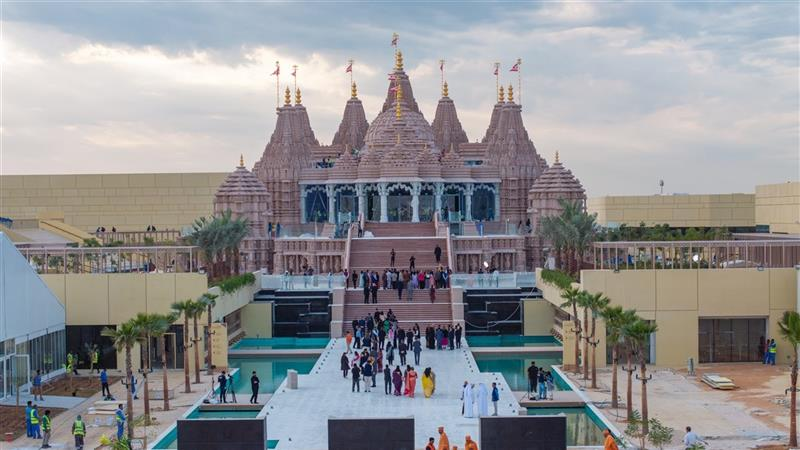

Let's dive in!!
This is the tallest building of the world having 161 floors. 40 floors are under construction and the rest 121 floors are habited by celebrities all over the world. This magnificent monument was created by EMAAR under the ruler of Dubai.

This is the place for shopping brands of all kinds and getting lost in the wonder of products. This Mall spreads an aroma of energy and freshness all over the place. It is the largest Mall of the world.

This is a religious site for the Hindus. It has got idols which the Hindus from all over the world worship each stating it's own significance. It is a place for sculpture and a place to remind us what secularism is.

The founder, Sheikh Zayed, designed the mosque to "unite the world." It intentionally blends historical Islamic architectural styles. • it was designed from the beginning as a center for global cultural dialogue, welcoming millions of non-Muslim tourists each year to experience Islamic heritage.

This is the workplace of the royals of Abu Dhabi and also a place where foreign dignitaries visit the country and stay there. It is a place to view the majestic life led by the President of UAE and the current ruler of Abu Dhabi.

In my opinion this is a real example of Fairyland. It is impossible to believe that a garden so beautifully decorated can be grown on a desert.

Please like, share and comment about your experience and help us build a better network for you all.